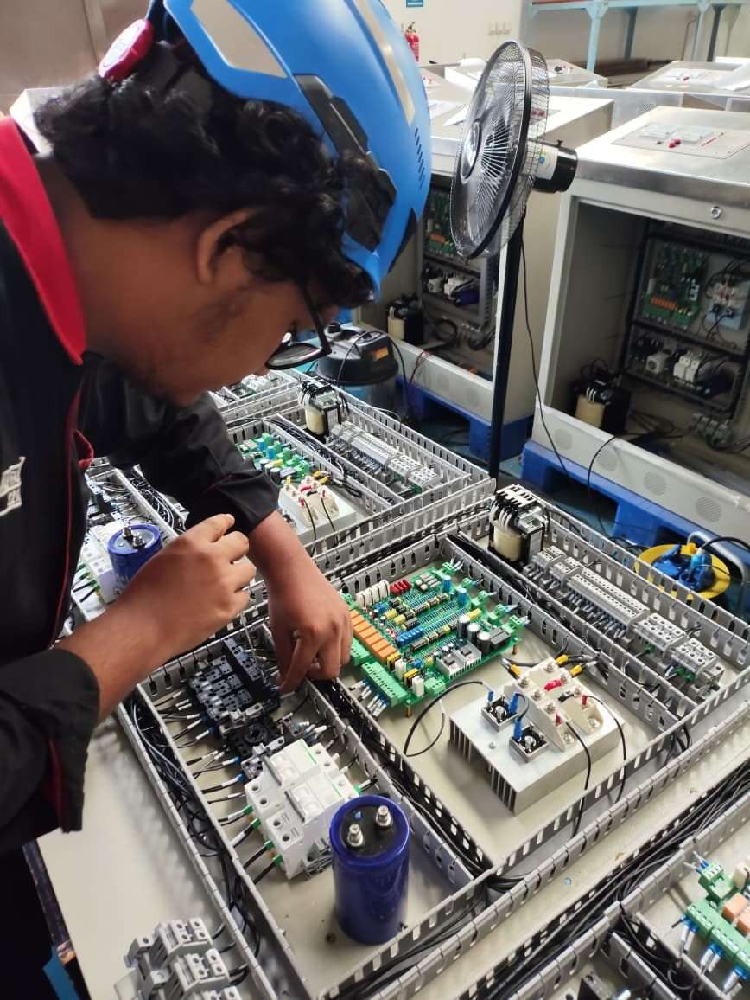
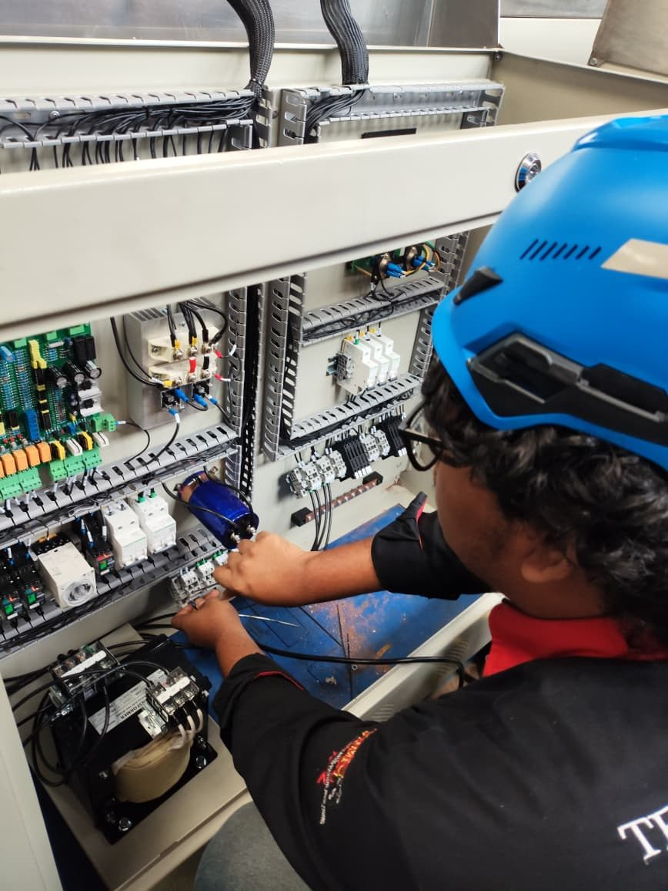
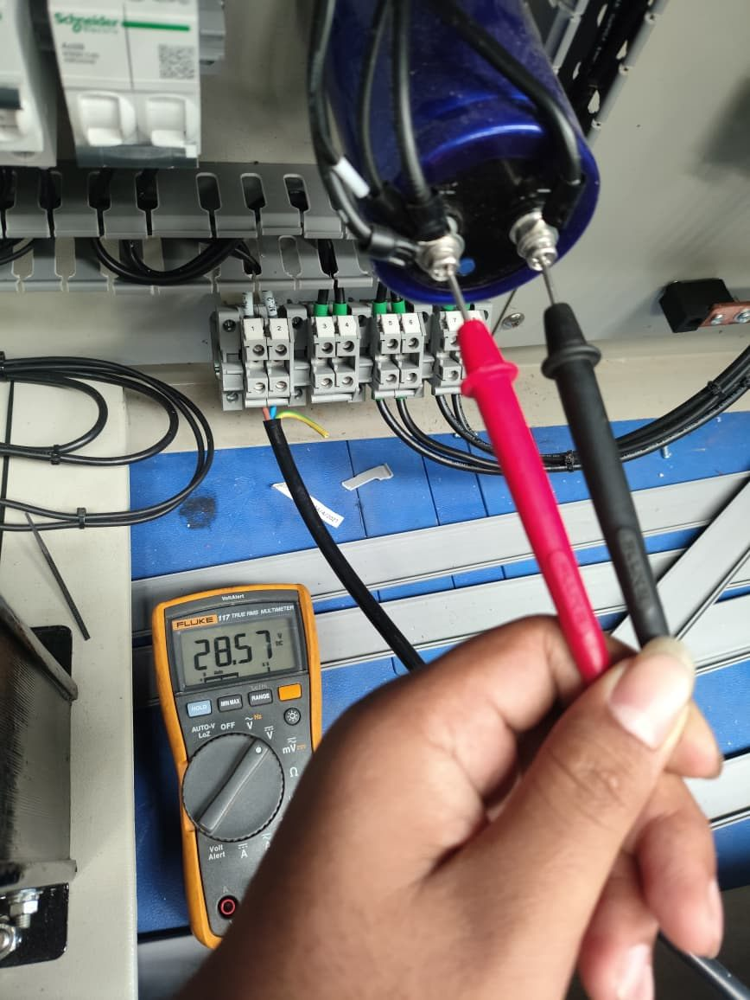
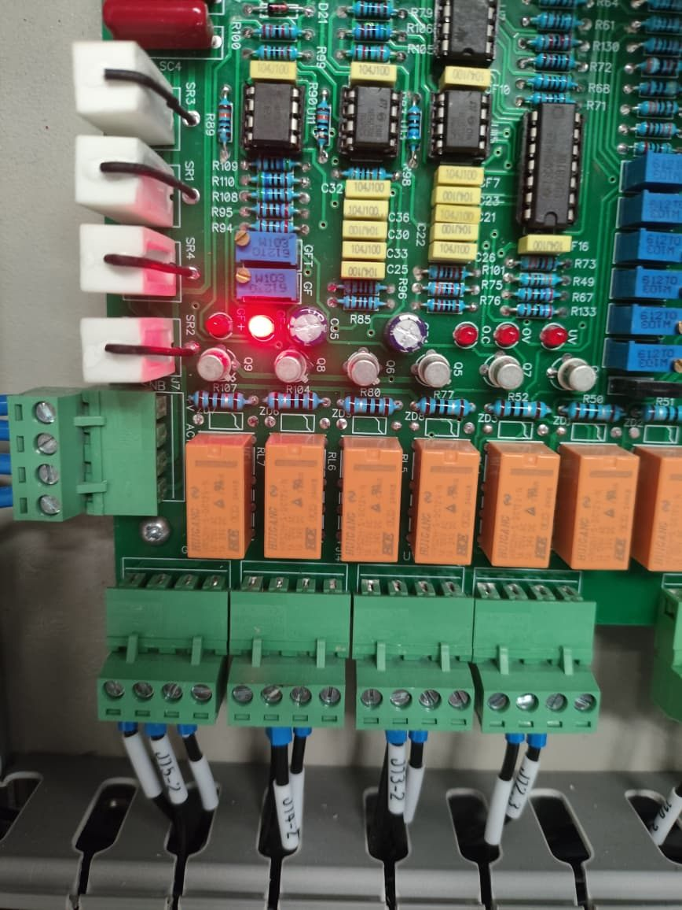
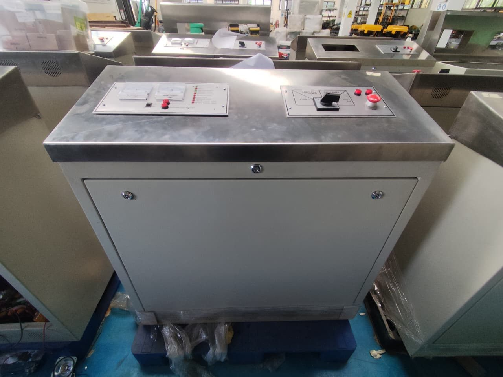

Internship 01 · Railway · Bandung
JPL control panels PT KAI
Production Engineer (Intern), UPT Balai Yasa Sintel dan LAA · Sep 2025 – Jan 2026
Prototype development, assembly and testing of level-crossing (JPL) control-desk panels, including QC and troubleshooting of the battery-charger module. Final assessment: Excellent.
- 42Panel units
- 90.5%Passed functional test
- 4 hTroubleshooting per unit
- AssembleBuild panels and check wiring
- CalibrateHardware calibration and QC
- TestStandardised functional test
- FixRoot-cause analysis and repair